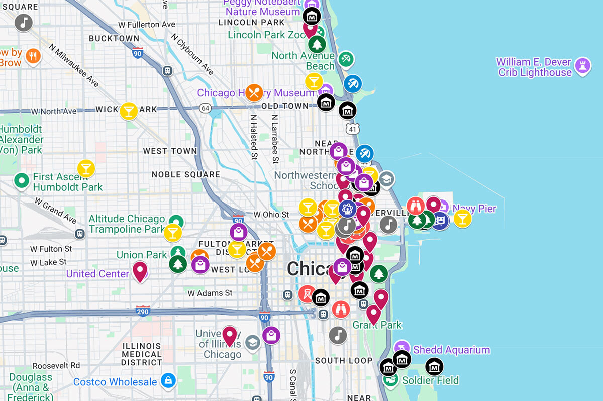
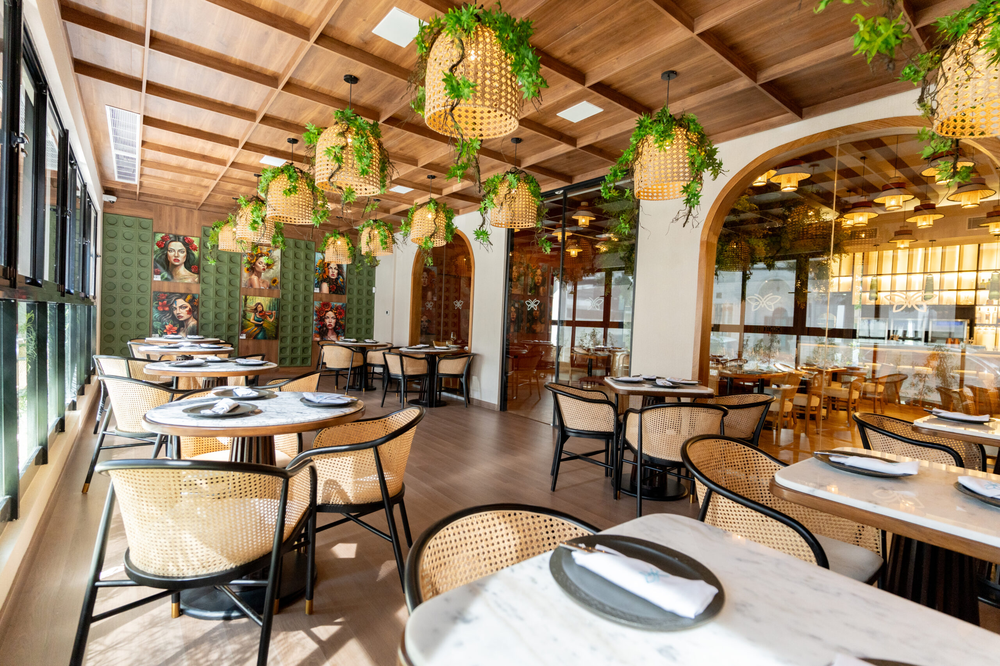
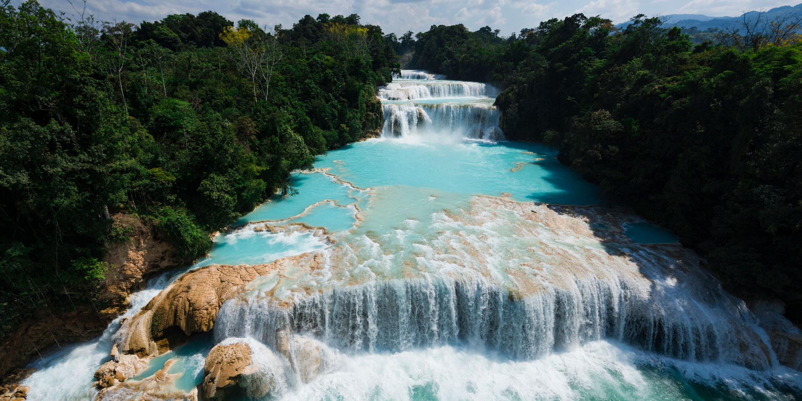

Explora el mundo con recomendaciones inteligentes
TuristIA es tu agente turístico basado en inteligencia artificial que te ayuda a descubrir lugares, restaurantes y hoteles con recomendaciones personalizadas basadas en tus preferencias.
TuristIA es tu agente turístico basado en inteligencia artificial que te ayuda a descubrir lugares, restaurantes y hoteles con recomendaciones personalizadas basadas en tus preferencias.

Descubre cómo nuestra IA mejora tu experiencia de viaje.
Nuestra IA analiza tus preferencias y te sugiere los mejores lugares para visitar.
Filtra resultados por precio, tipo de comida, distancia, calificación y tipo de experiencia.
Visualiza todos los lugares recomendados directamente en un mapa interactivo.
Consulta clasificaciones basadas en opiniones, popularidad y calidad.
Accede a fotos, horarios, reseñas, precios y datos importantes de cada lugar.

Descubre los mejores restaurantes según tu estilo gastronómico.
Encuentra hospedaje ideal según tu presupuesto y ubicación.

Explora atracciones y experiencias recomendadas por IA.
"TuristIA me ayudó a encontrar restaurantes increíbles durante mi viaje. Las recomendaciones fueron perfectas."
— Ana Rodríguez
"Me encanta poder filtrar lugares según mis gustos y ver todo en el mapa."
— Carlos Méndez